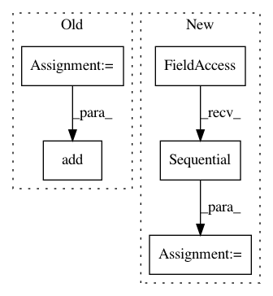

e8b43356aa8cb8c659cae25aea32a49fd0881cd9,gluon/gluoncv2/models/densenet_cifar.py,CIFARDenseNet,__init__,#CIFARDenseNet#Any#Any#Any#Any#Any#Any#Any#,38
Before Change
in_channels=in_channels,
out_channels=init_block_channels))
in_channels = init_block_channels
for i, channels_per_stage in enumerate(channels):
stage = nn.HybridSequential(prefix="stage{}_".format(i + 1))
with stage.name_scope():
if i != 0:
stage.add(TransitionBlock(
in_channels=in_channels,
out_channels=(in_channels // 2),
bn_use_global_stats=bn_use_global_stats))
in_channels = in_channels // 2
for j, out_channels in enumerate(channels_per_stage):
stage.add(DenseUnit(
in_channels=in_channels,
out_channels=out_channels,
bn_use_global_stats=bn_use_global_stats,
dropout_rate=dropout_rate))
in_channels = out_channels
self.features.add(stage)
self.features.add(PreResActivation(
in_channels=in_channels,
bn_use_global_stats=bn_use_global_stats))
self.features.add(nn.AvgPool2D(
pool_size=8,
strides=1))
self.output = nn.HybridSequential(prefix="")
self.output.add(nn.Flatten())
self.output.add(nn.Dense(
units=classes,
in_units=in_channels))
def hybrid_forward(self, F, x):
x = self.features(x)
x = self.output(x)
After Change
bn_use_global_stats=False,
dropout_rate=0.0,
in_channels=3,
in_size=(32, 32),
classes=10,
**kwargs):
super(CIFARDenseNet, self).__init__(**kwargs)
In pattern: SUPERPATTERN
Frequency: 4
Non-data size: 5
Instances
Project Name: osmr/imgclsmob
Commit Name: e8b43356aa8cb8c659cae25aea32a49fd0881cd9
Time: 2019-01-27
Author: osemery@gmail.com
File Name: gluon/gluoncv2/models/densenet_cifar.py
Class Name: CIFARDenseNet
Method Name: __init__
Project Name: osmr/imgclsmob
Commit Name: 553f777ad245ef3caa799151e34e6cc37bbcb11a
Time: 2020-02-18
Author: osemery@gmail.com
File Name: tensorflow2/tf2cv/models/mobilenetv2.py
Class Name: MobileNetV2
Method Name: __init__
Project Name: osmr/imgclsmob
Commit Name: 14303300e332c3be5d669789f3aa736befa22575
Time: 2020-10-19
Author: osemery@gmail.com
File Name: tensorflow2/tf2cv/models/resnesta.py
Class Name: ResNeStA
Method Name: __init__
Project Name: osmr/imgclsmob
Commit Name: b89b592181e06850fa6eae6be04c2f8ec3b7fdaf
Time: 2018-08-18
Author: osemery@gmail.com
File Name: gluon/models/preresnet.py
Class Name: PreResNet
Method Name: __init__